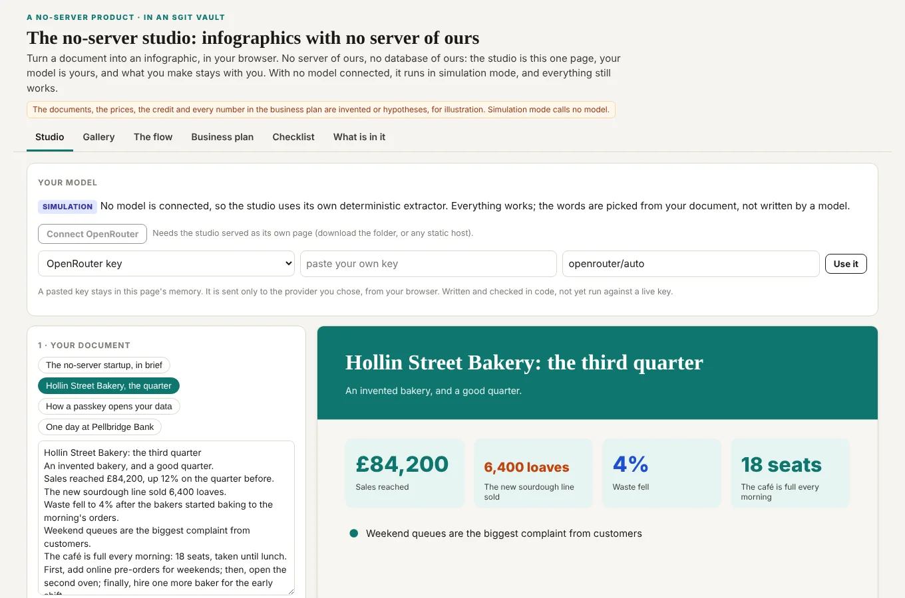
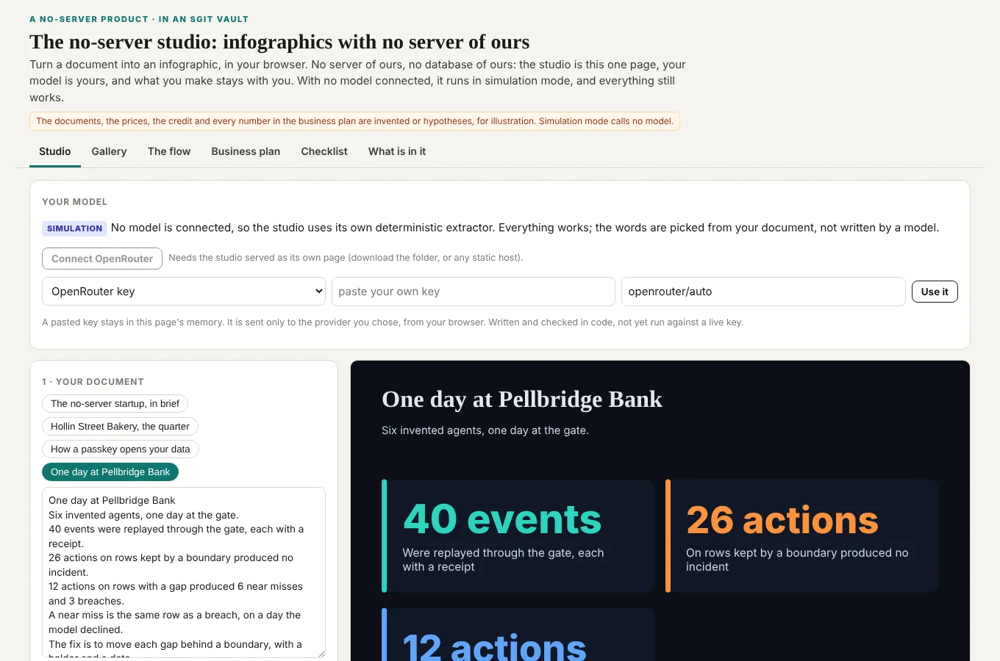
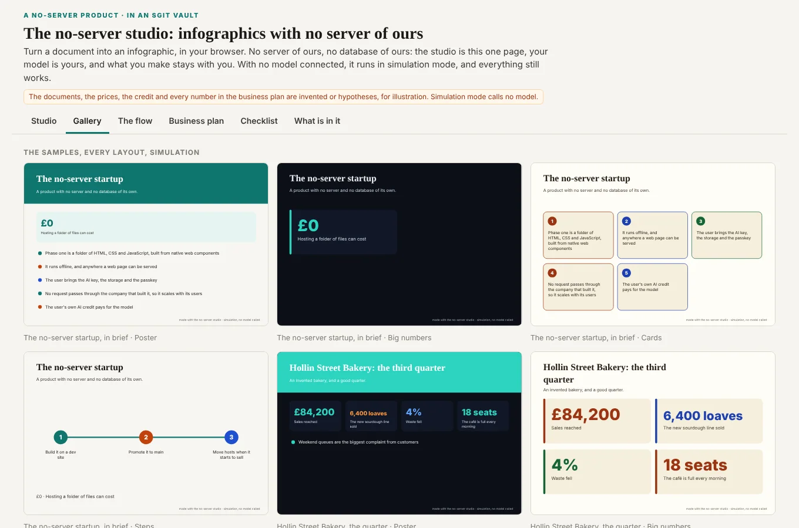
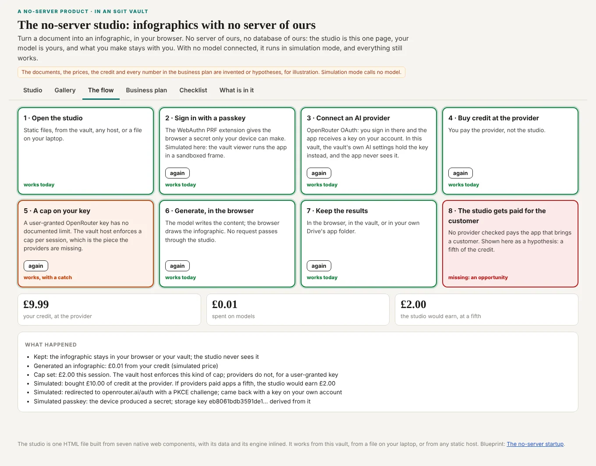
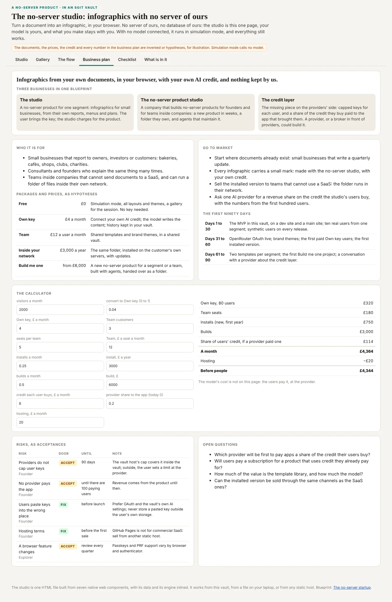
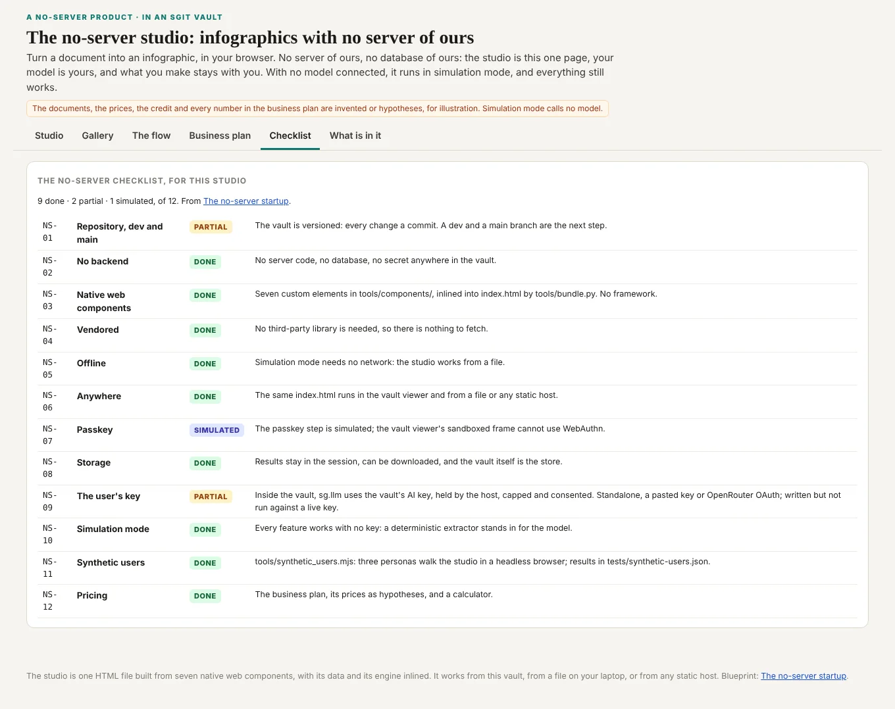
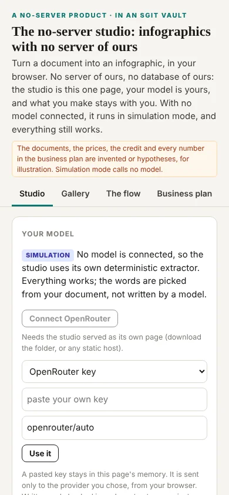
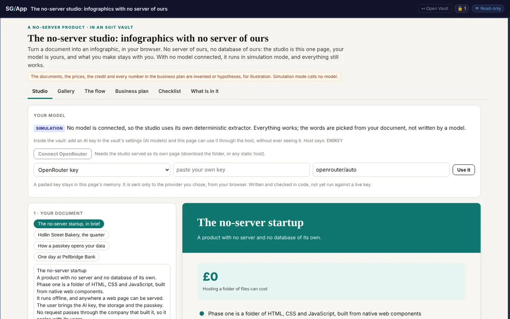

Home / Replicate / The no-server studio: an MVP of the no-server startup, in a vault
A vault
The no-server studio: an MVP of the no-server startup, in a vault
A product with no server of ours, mostly simulated, in a vault you can open.
A blueprint for products with no server and no database of their own, a tour of an MVP built to it, and the MVP itself, in a vault, with its business plan.
Read key:
sgit_public_read_f12934c9b37c9c8911aafa6897c6a89b8375ef6fb84232fcf929c40b1c7cdc98:iozssz56In the official UI: open it read-only in a new tab · From the CLI:
sgit clone sgit_public_read_f12934c9b37c9c8911aafa6897c6a89b8375ef6fb84232fcf929c40b1c7cdc98:iozssz56Published deliberately under the
sgit_public_read_ prefix, and derived one-way from a vault key that is not in this repository. Read back with this key before it was published: the same 46 files, the same studio.Open the studio, full screen → or use it here, below
Opens in the vault's own app, read-only: the studio, the gallery, the flow, the business plan with its calculator, and the checklist.
Use it here
Pick a document or paste your own, then try the layouts and themes. Open the flow and press each step. Open the business plan and change the calculator's numbers.
What is real, and what is simulated
| Part | In this vault |
|---|---|
| The product | Real: one HTML file, seven native web components, no framework, no build step, no server. |
| Drawing the infographic | Real: the browser draws it as SVG, in four layouts and three themes. |
| Writing its content | Simulated by default, with a deterministic extractor. Inside the vault, the studio asks the host for a model through sg.llm; on a public read there is no key, so it says so and stays in simulation. |
| Your own key | Written and checked in code, not yet run against a live key: OpenRouter's OAuth when the studio is served as its own page, or a pasted key, held in memory only. |
| Passkey, credit, cap, revenue share | Simulated, in the flow, with invented money. |
| Synthetic users | Real: three personas walked the studio in a headless browser before it was published, and all their checks passed. |
What is in it
| Path | What |
|---|---|
index.html | The studio: seven web components, the engine and the data, inlined. |
content.json | Sample documents, layouts, themes, the flow, the checklist and the business plan. |
studio.js | The engine: extract (simulation), prompt and parse (a model), render (SVG). |
components/ | The seven components, one file each. |
gallery/ | Every sample in every layout, as SVG. |
plan/ | The business plan, for somebody to build, and the checklist. |
tests/ | What the three synthetic users saw. |
tools/ | The scripts that build all of it. |
A tour







